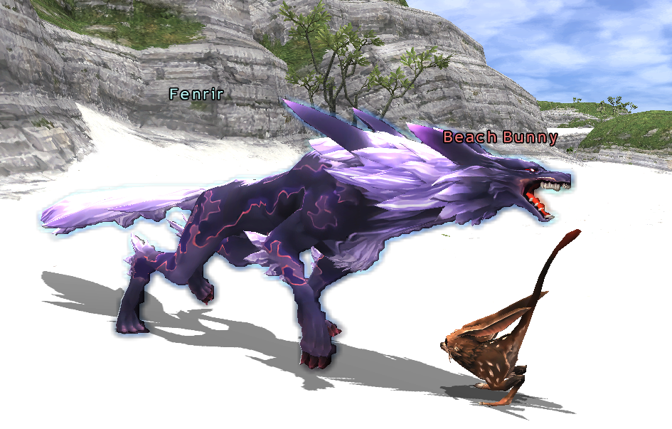

Fenrir

| Fenrir — The Moonlit Path | |
|---|---|
| Avatar | Fenrir (dark, terrestrial avatar) |
| NPC | Leepe-Hoppe — Windurst Waters South (J-9), on the roof of the Rhinostery (stairs on the side of the building), by Home Point #3 |
| Requirement | All six Whispers at the same time (Flames, Frost, Gales, Tremors, Tides, Storms). No Fame needed. |
| Key Item | Moon Bauble → Whisper of the Moon |
| Battlefield | Full Moon Fountain — Toraimarai Canal (G-7). Level 65+, Trusts allowed, 30 minutes, up to 6 players (each with a Moon Bauble) |
| Fenrir Prime | Level 80–82 · about 9,300–9,800 HP · weak to Light · aggressive, true hearing, detects magic |
| Repeatable | Once a day (after midnight JST) — a new Moon Bauble from Leepe-Hoppe, no Whispers needed again |
| Title | Heir of the New Moon |
| Rewards | Fenrir (pact) · Fenrir's Stone · Fenrir's Cape · Fenrir's Torque · Fenrir's Earring · Ancients' Key · 15,000 gil — one per win. Windurst citizens at Rank 10 also get the Dark Mana Orb. |
Fenrir is the seventh avatar. He is not behind a Trial-Size fight: you must beat the six Prime avatars first, keep their Whispers, and then take Carbuncle's request to the Full Moon Fountain.
Walkthrough
- Beat the six Prime avatars and keep the six Whispers. Do not return to the avatar NPCs for their rewards yet — the Whisper is used up when you take a reward. (See Avatars for each Prime.)
- Talk to Leepe-Hoppe on the roof of the Rhinostery, Windurst Waters South (J-9), and accept his request. If he starts the Tuning In quest instead, zone and talk to him again.
- Talk to him again with the six Whispers. He takes them and gives you the Moon Bauble.
- Talk to him once more while you hold the Moon Bauble. You are sent straight to the Full Moon Fountain.
- Summon your Trusts and your avatar, then examine the fountain with the Moon Bauble to enter the battlefield.
- Defeat Fenrir Prime. You receive the Whisper of the Moon.
- Return to Leepe-Hoppe and choose your reward. First time: take Fenrir.
If you lose: you keep the Moon Bauble — no need to collect the Whispers again. Warp out and try again.
Walking there (if you skip the teleport)
The Full Moon Fountain is at the end of Toraimarai Canal (G-7). Two ways in:
- Inner Horutoto Ruins → the Three Mage Gate. It opens for a party with a RDM, WHM and BLM standing on the coloured circles, or for anyone holding the Portal Charm key item.
- Windurst Walls (if you started the Windurst Waters quest Toraimarai Turmoil): from the T-junction at (H-7) on map 2 go west and take the steps down into the water, north then west back onto map 1, north then west in the water to the T-junction at (H-7) on map 1, south, up the steps at (G-8), and on to the fountain.
- Toraimarai Canal Home Point #1 is next to the fountain — take it on the way and every later run is a warp.
The Fight
- Fenrir Prime uses his normal Blood Pacts: Crescent Fang, Eclipse Bite, Moonlit Charge, and Lunar Roar (30-yalm AoE, strips up to 10 buffs — Reraise is not removed).
- At about 50% HP (sometimes again at 30%) he uses Howling Moon, his Astral Flow pact: 30-yalm AoE that deals damage based on the target's remaining HP. On other days and moon phases it can hit for over 2,000. Best day: Lightsday, best moon: New Moon.
- He has a very long magic-detection range and aggro spreads to the whole party. If nobody holds him he regenerates fast (full HP in under 3 minutes).
- He is weak to Light. Do not use dark damage.
EmberXI solo tips: bring Carbuncle (Searing Light is light damage and lands full) or Garuda for raw damage; keep a tank Trust (Trion, Valaineral…) in front, a healer Trust, and stand back with your Bar-spells up. Rebuff after every Lunar Roar. Keep HP high before 50% — Howling Moon scales with what you have left, so it is survivable when everyone is topped up.
Rewards
| Reward | Notes |
|---|---|
| Fenrir | The avatar. Take it first. |
| Fenrir's Stone | Ammo slot, SMN |
| Fenrir's Cape | Back |
| Fenrir's Torque | Neck |
| Fenrir's Earring | Ear |
| Ancients' Key | One of the seven items for the Evoker's Ring (Mama Mia, Mamaulabion in Norg G-6) |
| 15,000 gil |
Fenrir's Blood Pacts
All of Fenrir's pacts are Darkness-based. His attack delay is 280 and he gains 7.4 TP per hit; he has the Arcana Killer trait, so he fights as a Dark Knight. Summon cost is 15 MP on the first cast.
| Blood Pact: Rage | Level | MP | Effect |
|---|---|---|---|
| Moonlit Charge | 5 | 17 | Single attack, blinds the target |
| Crescent Fang | 10 | 19 | Single attack, paralyzes the target |
| Eclipse Bite | 65 | 109 | Threefold attack |
| Howling Moon | 1 | level x2 | Astral Flow only: uses all MP, dark AoE damage |
| Blood Pact: Ward | Level | MP | Effect |
|---|---|---|---|
| Lunar Cry | 21 | 41 | Lowers the target's accuracy and evasion (split by moon phase, always -32 total) |
| Lunar Roar | 32 | 27 | Removes two buffs from enemies in an area |
| Ecliptic Howl | 43 | 57 | Party accuracy and evasion up (split by moon phase, +26 total), 180 seconds |
| Ecliptic Growl | 54 | 46 | Party attributes up (split by moon phase, +8 total), 180 seconds |
EmberXI changes
- No Fame needed to start The Moonlit Path (the four-nation Fame gate is removed).
- Leepe-Hoppe teleports you to the Full Moon Fountain while you hold the Moon Bauble — first run and every repeat.
- Trusts are allowed in the battlefield; the fight requires level 65+.
- Repeatable once a day, like the six Prime fights.
Last edited: 12 September 2026 · EmberXI Wiki